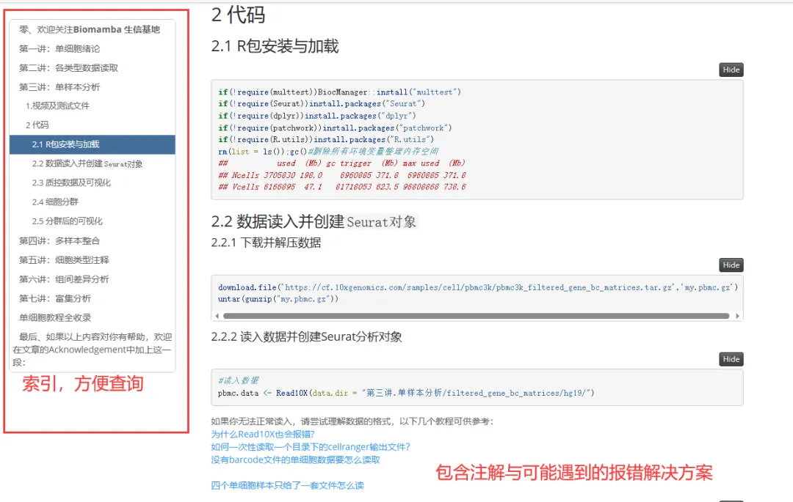
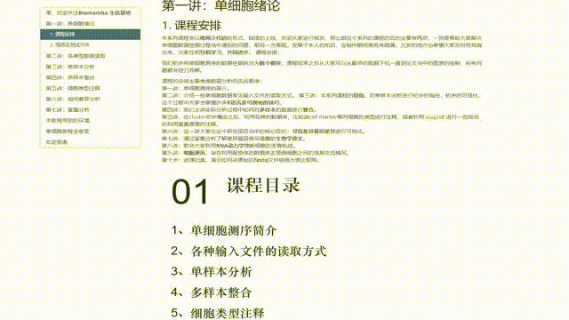
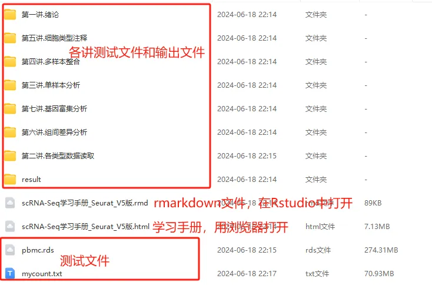

scRNA-Seq学习手册(基于Seurat V5)
原文：https://mp.weixin.qq.com/s?__biz=MzAwMzIzOTk5OQ==&mid=2247540715&idx=2&sn=3cd1ae2f3bb66978317dc04097eef826&chksm=9b3c26bbac4bafad95197f607f819302567eb4f79327634c054a1715c4689e0886d326e7bda8#rd 合集：单细胞教程全收录

学习手册

 这里我们重置了我们在B站上播放量已逾三十万 的单细胞课程代码(1~7节近五个小时的基础视频课：https://www.bilibili.com/video/BV1S44y1b76Z)，并通过Rmarkdown的形式编译成了一个学习手册(HTML文件，用浏览器打开，在文末获取)，其中包含了课程涉及到的视频、代码、测试文件和输出结果(学有余力的同学推荐自行去官网整理：https://satijalab.org/seurat/)。为了避免Seurat V5可能带来的bug，本次教程使用最新版的Seurat V5进行修订与编译(快速上手Seurat V5)，希望该手册可以帮助大家完成单细胞基础分析的一站式学习 ，更习惯使用V4的同学可以参考：scRNA-Seq学习手册Seurat V4修订版。
这里我们重置了我们在B站上播放量已逾三十万 的单细胞课程代码(1~7节近五个小时的基础视频课：https://www.bilibili.com/video/BV1S44y1b76Z)，并通过Rmarkdown的形式编译成了一个学习手册(HTML文件，用浏览器打开，在文末获取)，其中包含了课程涉及到的视频、代码、测试文件和输出结果(学有余力的同学推荐自行去官网整理：https://satijalab.org/seurat/)。为了避免Seurat V5可能带来的bug，本次教程使用最新版的Seurat V5进行修订与编译(快速上手Seurat V5)，希望该手册可以帮助大家完成单细胞基础分析的一站式学习 ，更习惯使用V4的同学可以参考：scRNA-Seq学习手册Seurat V4修订版。

更多单细胞教程可见：少走点单细胞的弯路
-Biomamba

所见即所得

文末下载链接中包含的内容：

解锁前需阅读：龙年订阅须知

文末还可解锁以下内容


龙年订阅合集持续更新中，联系客服微信[Biomamba_yunying]可以119￥获取全部资料(包括今年后面更新的内容)。当然，付费不是目的，以下资料都可以通过转发领取(更推荐这种方式)。
龙年订阅须知 单细胞Figure 1常见图表 快速上手Seurat V5 机器学习基础手册 scRNA-Seq学习手册Seurat V4修订版 Bulk RNASeq| 转录组实战scRNA-Seq双细胞过滤手册 CellChat空转细胞通讯合辑

订阅后获取学习手册下载链接：
提取码请联系客服微信[Biomamba_zhushou]
https://pan.baidu.com/s/1GpjTmwLFO_BFwJq3-IGQzg
-Biomamba